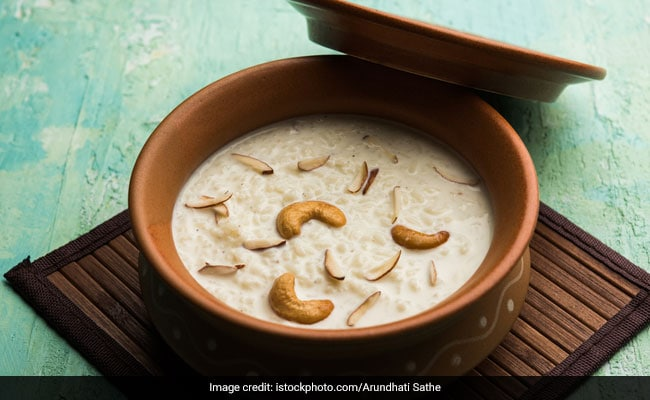

Kheer

Indulge in the rich, creamy and aromatic delicacy of
Kheer, the traditional Indian sweet made with milk,
rice, and sugar, and garnished with dry fruits and nuts,
a perfect end to any meal!
A delicious, creamy, rice and milk enriched with the
goodness of cashews and raisins, paal payasam is a
south Indian dessert, a version of kheer, made on
various festivals and celebratory occasions like onam.
It is a simple recipe with richness of nuts and
goodness of milk. Payasam is often offered as 'prasadam'
in various temples and pujas across the country.
There are many variations of payasam, from moong dal
payasam to coconut payasam, but here is a payasam recipe
which is the easiest and simplest of them all. With a
luscious creamy layer, garnished with nuts, you might
just need no reason at all to make this other than a heart
indulgence!
Ingredients
- 50 gms rice
- 1 litre milk
- 5 gram cardamom powder
- 100 gms sugar
- 50 ml ghee(clarified butter
- 50 gms cashew nuts
- 25 gms raisins
Recipe Instructions
- Wash and soak the rice for 1/2 an hour.
- Cook the rice in milk until soft.
- Add cardamom powder, sugar and stir until the sugar is
dissolved.
- Heat ghee in a pan and add the cashew nuts.
- When the cashew nuts are slightly golden, add the
raisins and saute for a minute.
- Pour on the rice mixture and serve warm.
- That's it!
Other recipes you may want to check out: